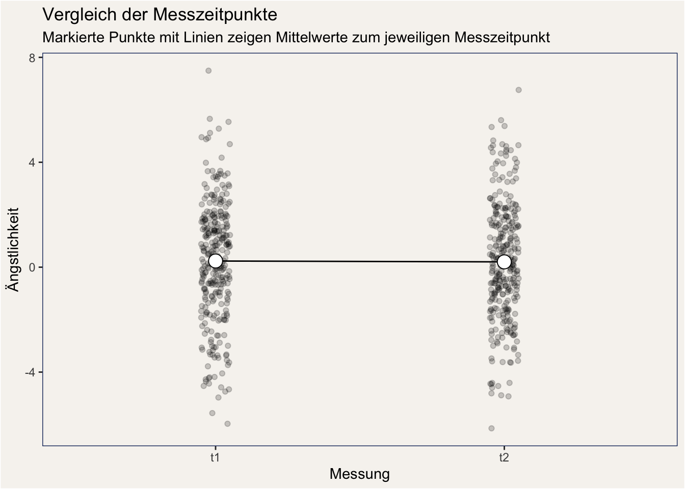
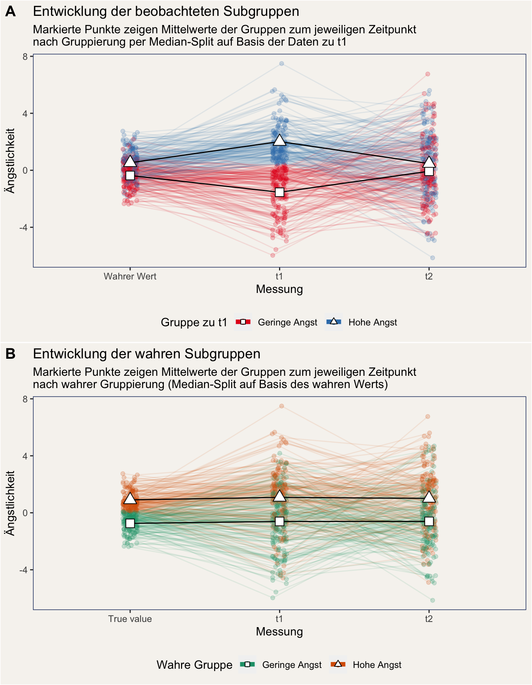
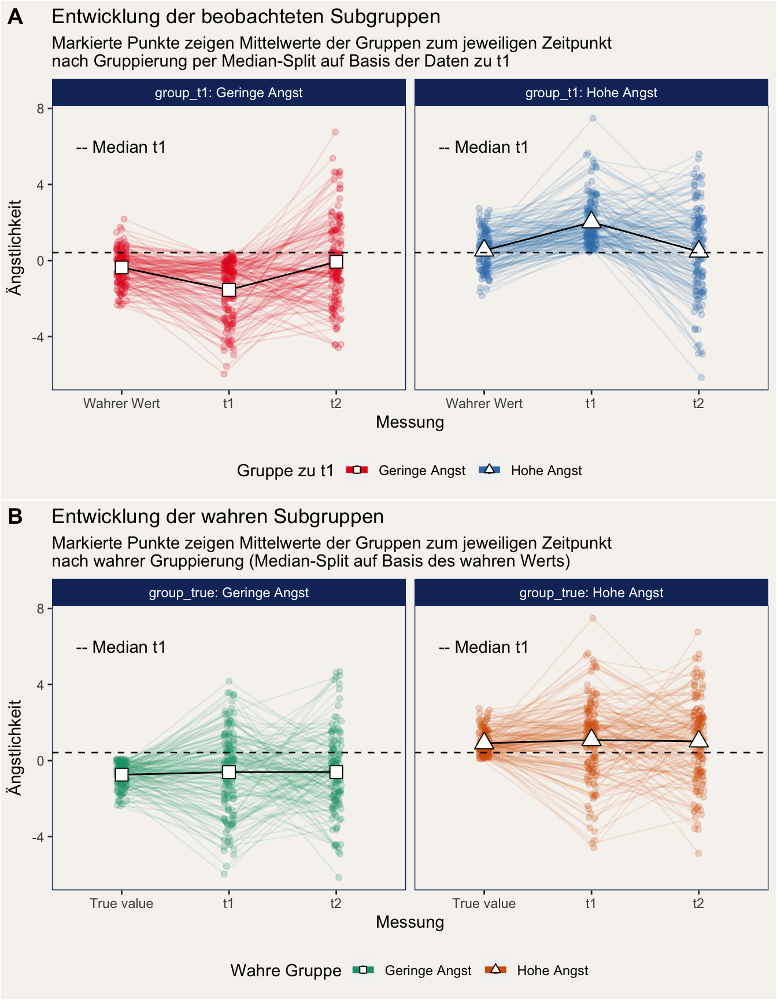

Regression zur Mitte
Johannes Brachem & Christian Treffenstädt
Was ist Regression zur Mitte?
Wikipedia macht einen recht guten Job in dem Versuch, Regression zur Mitte kurz und bündig zu erklären:
„Regression zur Mitte ist ein Begriff der Statistik; er bezeichnet das Phänomen, dass nach einem extrem ausgefallenen Messwert die nachfolgende Messung wieder näher am Durchschnitt liegt, falls der Zufall einen Einfluss auf die Messgröße hat. Dies gilt immer, wenn die beiden Messungen korrelieren, aber nicht zu 100 %.“
Aber was heißt das eigentlich? Wir holen zunächst kurz etwas aus und beschreiben eine Studie, in der aufgrund der Regression zur Mitte ein Denkfehler gemacht wurde. Die Studie ist fiktiv, wir haben die Daten dazu simuliert.
Beispiel: Die Tagebuch-Intervention
Ein Forscher:innen-Team möchte eine neue Methode zur Behandlung von generalisierten Angstzuständen untersuchen. Die Methode: Über einen Zeitraum von mehreren Monaten schreiben die Patient:innen einmal wöchentlich in ein Tagebuch alle Dinge auf, die ihnen Angst einflößen. Dadurch, so die Theorie, können sie sich von der Angst lösen.
Die konnten eine herausragende Stichprobe gewinnen: 300 Menschen nehmen teil. Die generelle Ängstlichkeit der Teilnehmenden wird einmal zu Beginn der Intervention und einmal 6 Monate nach der Intervention erhoben.
Die Ergebnisse scheinen zunächst nicht vielversprechend zu sein: Die durchschnittliche Ängstlichkeit veränderte sich vom ersten zum zweiten Messzeitpunkt praktisch gar nicht:
 Anmerkung: In diesen Plots ist jeder kleine Punkt der Wert einer Versuchsperson.
Doch das kann nicht das Ende der Geschichte gewesen sein - ein tüchtiger Doktorand macht sich daran, die Daten genauer zu analysieren. Er stellt sich die Frage: „Was, wenn unsere Intervention unterschiedlich wirkt, je nachdem wie groß die Belastung zu Beginn war?“. Ausgehend von dieser Frage schaut unser Doktorand sich an, wie die Entwicklung in zwei Subgruppen verläuft: In der Gruppe “hohe Angst” sind diejenigen, die zu Beginn ein hohes Angstlevel (höher als der Median) aufwiesen, und in der Gruppe “geringe Angst” sind diejenigen, die zu Beginn ein niedriges Angstlevel (niedriger als der Median) aufwiesen.
Schauen wir uns an, was die Daten hier sagen:

Es scheint eindeutig zu sein: Unser Doktorand war etwas wichtigem auf der Spur. Menschen mit hohem ursprünglichem Angstlevel scheinen durch die Tagebuchintervention tatsächlich ihr Angstlevel reduzieren zu können. Bei denjenigen allerdings, deren Angstlevel zu Beginn niedrig war, stieg die Ängstlichkeit an. Eine Regressionsanalyse bestätigt diesen Eindruck: Es gibt eine signifikante Interaktion zwischen der Gruppenzugehörigkeit am ersten Zeitpunkt und dem Zeitpunkt der Messung. (Wir belassen es an dieser Stelle dabei und zeigen die zugehörigen Regressionstabellen nur im Anhang.)
Der Haken
Aufmerksame Leser vermuten an dieser Stelle bereits, dass es einen Haken an der Analyse unseres Doktoranden gibt. Um diesen Haken aufzudecken, machen wir uns zunutze, dass wir die Daten, über die wir hier sprechen, simuliert haben. Deshalb kennen wir den wahren Wert der Ängstlichkeit unserer Versuchspersonen und den wahren Effekt der Tagebuchintervention. Dieser Effekt ist als Null-Effekt simuliert, das heißt in unserer Datensimulation hat die Tagebuchintervention keine Wirkung. Das bedeutet auch, dass sie in den Subgruppen keine unterschiedliche Wirkung hat. Doch warum scheint es trotzdem so zu sein?
Der Median-Split. Der Grund für den Schein-Effekt ist unsere Gruppeneinteilung auf Basis eines Median-Splits zum ersten Messzeitpunkt. Schauen wir uns dazu zwei weitere Plots an, in denen wir jeweils den wahren Wert mit abbilden. Plot A zeigt den Verlauf unserer zu t1 eingeteilten Gruppen. Plot B zeigt den Verlauf der echten Gruppen: Deren Einteilung wurde nicht auf Basis eines gemessenen Wertes vorgenommen, sondern auf Basis des wahren Werts (ein Luxus, den wir nur in einer Simulation haben).
 Wir können deutlich sehen, dass die Mittelwerte der wahren Subgruppen zu jedem Messzeitpunkt gleich bleiben, währen unsere zum ersten Messzeitpunkt eingeteilten Gruppen Bumerang-förmig schwanken. Warum ist das so?
- Unsere Messung der Ängstlichkeit ist unperfekt: Wir können den wahren Wert nicht genau erfassen. Die Korrelation zwischen wahrem Wert und Messung in unserem simulierten Beispiel liegt etwa zwischen .45 und .48. Wegen dieses Messfehlers machen wir Fehler in der Einteilung: In unserer Gruppe “hohe Angst” zu t1 befinden sich einige Menschen, die eigentlich zur Gruppe “niedrige Angst” gehören. Diese falsch eingeteilten Versuchspersonen landen mit recht hoher Wahrscheinlichkeit bei der nächsten Messung nicht wieder in der falschen Gruppe.
- Wenn wir nun aber die Entwicklung der in der Gruppe “hohe Angst” eingeteilten Menschen verfolgen, dann finden wir durch diesen Effekt eine Abnahme des Mittelwerts. Umgekehrt funktioniert es genauso für die Gruppe “geringer Angst”.
Die nächste Abbildung zeigt das gleiche Phänomen mit einzelnen Plots für die jeweiligen Subgruppen. Wir können daran wunderbar sehen, dass die Mittelwerte der wahren Subgruppen trotz Messfehler über die Zeit unverändert bleiben, während die Mittelwerte unserer zu t1 eingeteilten Subgruppen stark Schwanken.

Was tun gegen Regression zur Mitte?
Regression zur Mitte ist ein notorisch schwierig zu greifendes Phänomen. So schwierig sogar, dass der oben erwähnte Wikipedia-Artikel diese Aussage enthält:
„Da dieser Effekt intuitiv nicht zu verstehen ist, führt er zu verschiedenen Denkfehlern.“
Doch so dramatisch das klingt, wir sind nicht schutzlos gegen diese Denkfehler. Die wichtigsten Dinge, die wir tun können:
- Kontrollgruppen benutzen. Das Forschungsteam aus unserem Beispiel wäre nicht auf die Regression zur Mitte hereingefallen, wenn sie eine Kontrollgruppe in ihr Studiendesign integriert hätten. Daran hätte man erkennen können, dass das Muster in Experimental- und Kontrollgruppe das gleiche ist und daher nicht auf die Tagebuch-Intervention zurückgeführt werden kann.
- Median-Splits vermeiden. Es ist nicht immer möglich, Kontrollgruppen zu verwenden, bspw. wenn wir vorhandene Querschnittsdaten auswerten. Solche Daten können trotzdem analysiert werden, dabei sollte man aber tunlichst vermeiden, Subgruppen durch Median-Splits in der abhängigen Variable zu bilden. Solche Median-Splits sind ein Rezept für Interpretations-Chaos. Sie führen außerdem dazu, dass ernom viel Information weggeschmissen wird.
Warum ist der Haken wichtig?
Wissenschaftliche Perspektive
Wenn Regression zur Mitte eine Rolle spielt, dann ist die Gefahr groß, dass wir falsche Schlussfolgerungen ziehen. Unser Effekt könnte einfach ein statistisches Artefakt sein.
Wenn eine Studie ohne Kontrollgruppe durchgeführt, oder ein Median-Split in der abhängigen Variable durchgeführt wurde, dann bedeutet das aber nicht automatisch, dass es den gefundenen Effekt nicht gibt. Es bedeutet nur, dass die Alternativerklärung “Regression zur Mitte” nicht ausgeschlossen werden kann, und die Studie deshalb keinen starken Test der Hypothese darstellt. Siehe dazu auch mehr im Skript zu Korrelation und Kausalität.
Praktiker-Perspektive
Wenn wir Studien als Entscheidungsgrundlage benutzen, deren Ergebnis auf Regression zur Mitte zurückzuführen ist, dann kann es sein, dass der gewünschte Effekt einer Intervention ausbleibt: Vielleicht handelte es sich einfach um statistisches Artefakt.
Auch hier gilt: Entscheidungsträger in der Praxis sollten sich als Risikomanager:innen verstehen und die theoretische Plausibilität und empirische Evidenz ganzheitlich betrachten. Auf dieser Basis können sie verschiedene Szenarien abwägen und eine bestmöglich fundierte Entscheidung treffen.
Dahingehend treffen die gleichen, detaillierteren Überlegungen zu, die wir in unserem Artikel zu Konfundierung geschildert haben.
Daten und Skript
Hier können die Daten und das Skript der Datensimulation heruntergeladen werden:
Anhang: Regressionstabellen
Tabelle 1: Interaktion
| value | |||||
|---|---|---|---|---|---|
| Predictors | Beta | SE | CI | t | p |
| (Intercept) | 0.24 | 0.11 | 0.03, 0.45 | 2.21 | 0.027 |
| time [t2] | -0.03 | 0.15 | -0.33, 0.26 | -0.22 | 0.825 |
| group_t1 [linear] | 2.52 | 0.15 | 2.22, 2.81 | 16.66 | <0.001 |
|
time [t2] * group_t1 [linear] |
-2.13 | 0.21 | -2.55, -1.71 | -9.99 | <0.001 |
| Observations | 600 | ||||
| R2 / R2 adjusted | 0.323 / 0.319 | ||||
Tabelle 2: Unterschied von t1 zu t2 in der Gruppe “hohe Angst”
| value | |||||
|---|---|---|---|---|---|
| Predictors | Beta | SE | CI | t | p |
| (Intercept) | 2.02 | 0.15 | 1.72, 2.31 | 13.41 | <0.001 |
| time [t2] | -1.54 | 0.21 | -1.96, -1.12 | -7.25 | <0.001 |
| Observations | 300 | ||||
| R2 / R2 adjusted | 0.150 / 0.147 | ||||
Tabelle 3: Unterschied von t1 zu t2 in der Gruppe “geringe Angst”
| value | |||||
|---|---|---|---|---|---|
| Predictors | Beta | SE | CI | t | p |
| (Intercept) | -1.54 | 0.15 | -1.84, -1.24 | -10.17 | <0.001 |
| time [t2] | 1.47 | 0.21 | 1.05, 1.90 | 6.88 | <0.001 |
| Observations | 300 | ||||
| R2 / R2 adjusted | 0.137 / 0.134 | ||||